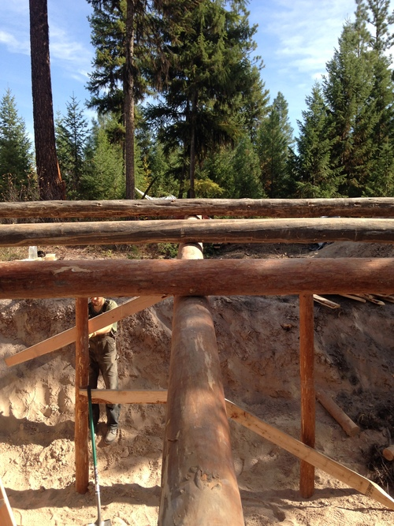

This page is about an earth bermed cabin I built in 2015. I've now lived in it for a year :)
Hope you enjoy the read. Don't take this page as professional advice, this was my first timber framing project.
To enlarge a picture, just click on it.
Jog to the end to see the references and a few more details.
Dug the Hole
Used an excavator to dig the initial hole into a slope. The cabin will end up facing uphill.
Peeled some logs
The bark has to be peeled off the log for it to dry quicker. It also helps cut down on the insects which enjoy eating bark.
In the dry heat of a Montana summer, the logs can be dry in under a year. I started the project in real late summer though. So the wood was still green when assembled.
A neighbor showed me a trick to dry logs more uniformly and prevent checking, paint the ends with latex paint.Then all moisture is forced out along the logs instead of the ends. It will take much longer to dry.
First few posts in the ground
A post hole digger is used to make a 3 foot deep hole. Then the posts are put in as level as possible. Some boarx was sprinkled into the fill material to prevent rot. The fill material is tamped hard.
Most posts in
Of the locally available timber types (Douglas Fir, Ponderosa Pine and Tamarak), Tamarak is the most rot resistant. It is best to use it for posts as they are in contact with earth.
But I didn't know this and just used whatever.
All posts in
Front view of all the posts in the ground.
Note;the logs have dried a bit darker than when freshly peeled. A thin, inner layer of bark was accidentaly left. I like the darker color, but it can slow down the drying process.
All posts in (2)
Side view of all the posts in the ground.
Drilling for a spike
An 18 inch long, half inch diameter drll bit is used for predrilling spike holes. It annoyingly took 2 batteries worth of charge to drill a few of these holes.
Central beam up
Those random diagonal 2x6 boards helped as scaffoldiing to lift the heavy beams up. We could just hook it up one board at a time.
This beam will be rotated so the arc is up before placing the girders on top.
More beams up
The corner posts are put in first and measured to be square and level. Then the center posts are added tobe equidistant to the corners. But you do not level the center post. You take a spare board and make sure the outside edge of the log is on the same plane as the outside edges of the corner posts.
More beams up(2)
The posts are spaced from center to center at about 3ft-8in. This is because the 2x6 boards are about 92-5/8in long. The design maximizes the board usage without having to do any cutting. I decided to pop out the back wall to increase the space some without needing any more 8ft long walls. I used pretty much precisely 1 unit of lumber for this project.
Hammering in the longest spike
This is the only spike that goes through 3 logs. Things kept shifting around a bit, but eventually it went all the way through. In the future I'd do my notching a bit diferent so everything rests more stably.

Beams
A big thanks to David for the great photography. He took most of the pictures, while I took the pictures that look like they came from a flip phone.
Beams(2)
Boarding it in!
The next door neighbor
Trimming
Chainsaw carpentry at its finest.
Although somewhat inelegant, the electric chainsaw was an indespensable tool.
Securing the overhang
Break time
Northside
I faced this house uphill which is East. Next time I would face the house South and just do a bit more reshaping of the hill. Solar gain makes a huge difference in winter. And in summer the morning sun makes my cabin too warm.
Tarping it
Used billboards work as pretty sturdy and waterproof tarps. They are free and recycled, win-win. I have at least 3 overlapping every part of the house.
A couple windows in
I have no idea what I am doing here. I just let things happen. I leveled a sill for each window and set the window up as far outside as possible. Makes a nice shelf in front of the windows on the inside.
The windows I bought were $5 a piece at a reuse building supply store. Single pane with a wood frame.
The wood frame worked out perfectly to just send wood screws every which way into the nearby boards. A year later it still works, but I'm doing it differently from now on.
All the windows installed
All the windows
It feels like "the inside"...
It's a pretty weird feeling. Everything was outdoors. Now, all of the sudden, part of it is supposedly the inside.
But yea, this was definitely the point when it no longer felt like a cow shed. I could live here.
The inside
This is the only wall with windows. The rest of the walls are earth bermed
This ladder :/
I'm glad I no longer have to use this ladder. It worked, just weighed a crap ton and was not very stable. I was so low on wood by the end that I disassembled it to finish framing in the back wall.
Just jump on in
The entryway eventually got fixed. As it was, flooding was an issue.
Faces Uphill
This shot is taken from the east side, looking downhill towards the house. Mike Oehler's uphill patio design is his tried and true method to keep an earth bermed house dry. The first house he built is over 40 years old now. Was lucky enough to visit his property awhile back. A few pictures from the trip in my blog. He also stopped by during the build process of this cabin. Rest in peace, Mike. His book is a vital resource for buildings of this type.
A door is added
The advantage of a non-fancy door is that it is easily resized. When the house settled, the doorway got tighter and I was able to take a 1/4 inch off with the chainsaw.
David's office
David managed to work remotely here on his blogging platform Blot.
Night
Cobbing cracks
Cob is a natural mortar/cement sort of mixture. Its just sand, clay, and some fiber. Sometimes people use cow dung as the fiber. Others just use straw. I used cob to chink any gaps.
Loft bed
Need to fix the entry
The initial excavation was much undersized. An "uphill patio" needs to be dug to route the run-off water around the house.
Bring in the tractor
Snuck the tractor in past my tent to do some earth moving. The guy I rent the acre from includes a few hours of tractor/excavator time in the first year's rent cost. Its been super handy since all of us living here are building our own dwellings.
That bike got me and my gear to the property from Amtrak 140miles away. It was my only transportation during the build. Glad my neighbors let me tag along into town many a time.
The assistant
thanks david, I owe you a house
Feeding the friends who helped
Big pot of chili for the house warming. Thanks to all my neighbors/friends who stopped by and lent a hand; David, Evan, Kai, Fred, Jesse, Chris, Sara, Paul, Kyle and more
A year later
Grass is starting to grow. The cabin is a comfortable place tolive, but still a few things to finish.
FAQ
How long did it take
Collecting materials and brainstorming the design took about a month. I think from putting the first post in to having a door installed was about 3 weeks. Thats about when I started sleeping in it. Although, it is an ongoing project. I didnt have heat, a floor, or electricity for the first several months.
How much did it cost
Including lumber, fasteners, windows, door, and woodstove I was under $500. Ive spent a bit more over the year touching things up and adding solar. I dont know an exact amount.
Whats the floor like
For the first few months it was just dirt. Now I finished most of it with wood. And I did an "earthen" part around the wood stove. An earthen floor can be just tamped dirt with linseed oil mixed in. It cured really hard. Other people online have fancy complicated methods. But I tend to look at a procedure of 30steps and delete 27 of them (probably why my beer is no good).
Legalities
Many rural counties have no building codes. Where I built this doesn't.


.jpg)


.jpg)
.jpg)


.jpg)


.jpg)

.jpg)
.jpg)